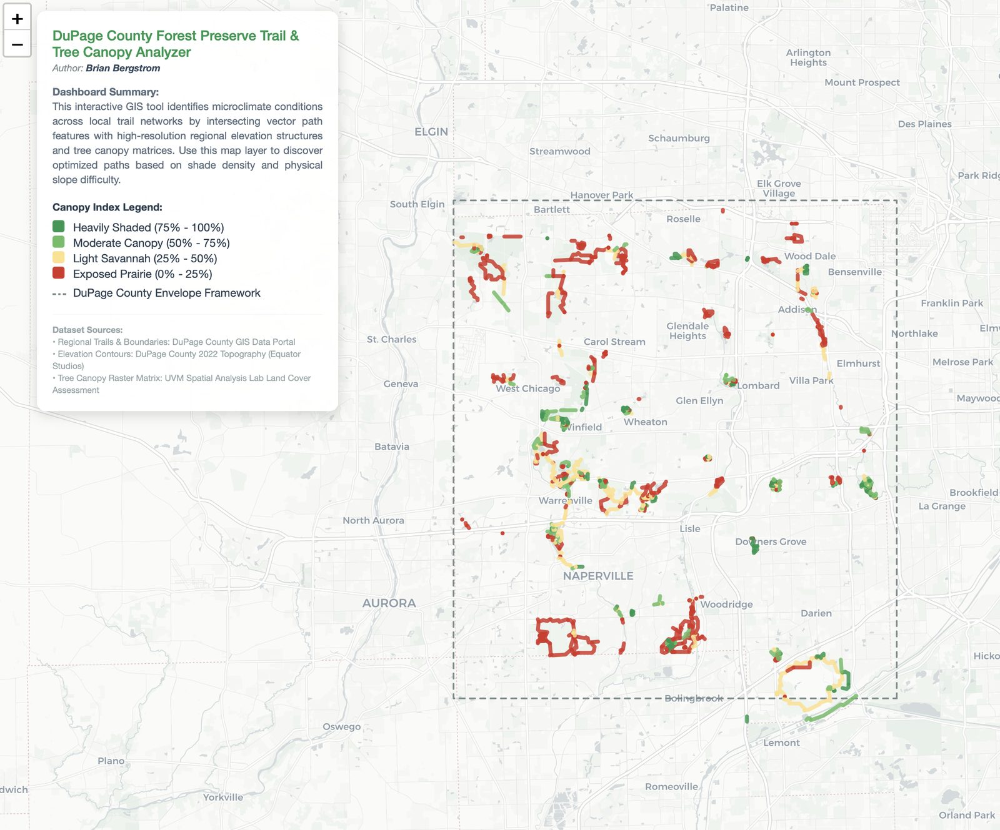

DuPage Forest Preserve Trail & Tree Canopy Analyzer
Analyzes canopy cover and trail elevation across DuPage County Forest Preserves to find the shadiest walking routes.

This one started as a purely personal problem: I wanted a shaded trail to walk in DuPage County and didn't have a good way to find one. It combines tree canopy data with trail elevation and slope to optimize for shade, sourced from the DuPage County GIS Portal, Equator Studios topography data, and the University of Vermont's Spatial Analysis Lab.
It's the same instinct behind the bus-line food-access work — solve a real problem I actually have — just applied to a recreational need instead of a civic one this time.
Live dashboard, DuPage County Forest Preserves.
View the dashboard (opens in a new tab) View the code (opens in a new tab)Let's talk about a job, a project, or both.
I'm open to full-time GIS Analyst roles and freelance/consulting work.